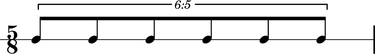

The Abjad _ContainerDurationInterface class
The Abjad _ContainerDurationInterface models the functionality that all container duration interfaces share.
Public interface
Attributes
abjad> container = Container(Note(0, (1, 8)) * 5) abjad> tuplet = FixedDurationTuplet((5, 8), [container, Note(0, (1, 8))]) abjad> measure = Measure((5, 8), [tuplet]) abjad> staff = RhythmicStaff([measure]) abjad> container (c'8, c'8, c'8, c'8, c'8) abjad> show(staff)
abjad> container.duration.contents Rational(5, 8)
abjad> container.duration.multiplier Rational(1, 1)
abjad> container.duration.prolated Rational(25, 48)
abjad> conatiner.duration.prolation Rational(5, 6)
abjad> conatiner.duration.prolation [Rational(5, 6)]
The container duration interface implements a trivial read-only
multiplierattribute, always equal to 1, to clean up parent-climbing algorithms likeexcise( ).See the
_ContainerDurationInterfaceclass incontainers/duration.pyfor implementation details.